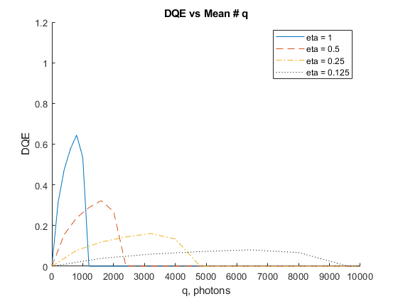
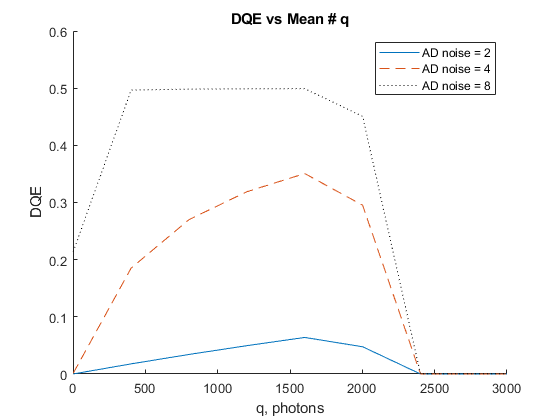
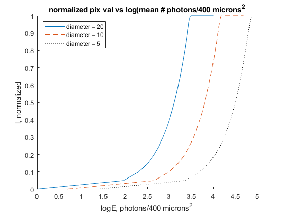
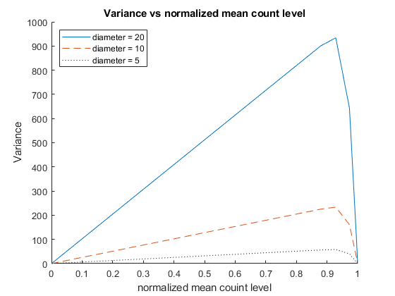
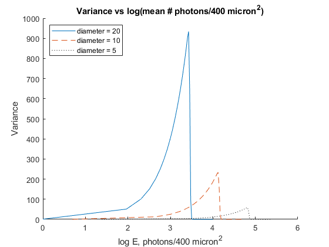
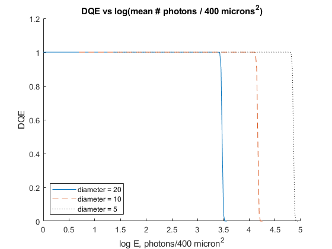
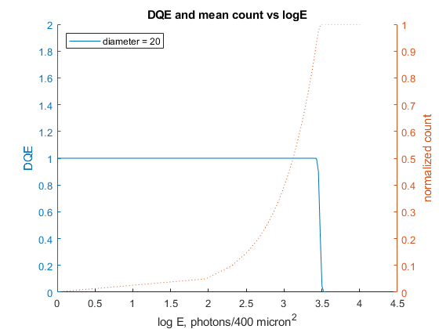

Imaging System Analysis Modeling
Project: Detector Modeling Author: Jared Gregor (jmg2586@rit.edu) Date: Oct 5 2020
Contents
Task 1
clear close all % Given Variables L = 1024; % Saturation level eta = [1.0, 0.5, 0.25, 0.125]; q = [1:200:8001]; % Lambda/ Mean exposure q_scaled = [q;q;q;q]; % Scale q for each eta q_scaled = q_scaled ./ eta'; noise_read = 0; % Electrons noise_AD = 0; % Calculate dqe with 0 noise dqe(1,:) = DQE(L, q, eta(1), noise_AD, noise_read); dqe(2,:) = DQE(L, q, eta(2), noise_AD, noise_read); dqe(3,:) = DQE(L, q, eta(3), noise_AD, noise_read); dqe(4,:) = DQE(L, q, eta(4), noise_AD, noise_read); % Plot DQE vs q Plot1(q_scaled, dqe) % Add noise noise_read = 10; % Electrons AD = 4; % bits noise_AD = NoiseAD(L, AD); % Calculate dqe with constant read and AD noise dqe(1,:) = DQE(L, q, eta(1), noise_AD, noise_read); dqe(2,:) = DQE(L, q, eta(2), noise_AD, noise_read); dqe(3,:) = DQE(L, q, eta(3), noise_AD, noise_read); dqe(4,:) = DQE(L, q, eta(4), noise_AD, noise_read); % Plot DQE vs q with noise Plot1(q_scaled, dqe)
Task 2
clear % Given Variables L = 1024; % Saturation level eta = 0.5; q = [1:200:3001]; % Lambda/ Mean exposure q_scaled = q ./ eta; % DQE varying read noise noise_read = [1,3,10]; noise_AD = 0; % Calculate DQE varying read noise and 0 AD noise dqe(1,:) = DQE(L, q, eta, noise_AD, noise_read(1)); dqe(2,:) = DQE(L, q, eta, noise_AD, noise_read(2)); dqe(3,:) = DQE(L, q, eta, noise_AD, noise_read(3)); Plot2(q_scaled, dqe,["read noise = 1", "read noise = 3", "read noise = 10"]) % DQE varying bit level noise_read = 0; AD = [2,4,8]; noise_AD = NoiseAD(L, AD); % Calculate DQE varying AD noise and 0 read noise dqe(1,:) = DQE(L, q, eta, noise_AD(1), noise_read); dqe(2,:) = DQE(L, q, eta, noise_AD(2), noise_read); dqe(3,:) = DQE(L, q, eta, noise_AD(3), noise_read); Plot2(q_scaled, dqe,["AD noise = 2", "AD noise = 4", "AD noise = 8"])
Task 3
clear % Given Variables noise_read = 0; noise_AD = 0; q = [1:50:3001]; % Lambda/ Mean exposure L = 1024; % Saturation level l_norm = (1 - F1(L, q)); % count diameter = [20,10,5]; %Square Pixel diameter microns area = diameter.^2; %microns^2 multiplier = area(1) ./ area; % Calculate E for each area E(1,:) = q;% ./ area(1); E(2,:) = multiplier(2) .* E(1,:); E(3,:) = multiplier(3) .* E(1,:); logE = log(E)./2; Plot3(logE, l_norm,["diameter = 20", "diameter = 10", "diameter = 5"])
Task 4
% Calculate variance for each area variance = Variance(L, q); variance = [variance; variance; variance]; variance = variance ./ multiplier'; Plot4_1(l_norm, variance,["diameter = 20", "diameter = 10", "diameter = 5"]) Plot4_2(logE, variance,["diameter = 20", "diameter = 10", "diameter = 5"]) 
Task 5
% Calculate DQE for each area eta = 1; dqe = DQE(L, q, eta, noise_AD, noise_read); Plot5_1(logE, dqe, ["diameter = 20", "diameter = 10", "diameter = 5"]) Plot5_2(logE, dqe, l_norm, ["diameter = 20", "diameter = 10", "diameter = 5"]) 
Functions
% AD noise function noise = NoiseAD(L, AD) noise = (L.^2)./(12.*2.^(2.*AD)); end % Compute f1 (eq 6) % Compute f2 (eq 9) % Compute f3 (eq 16) function f1 = F1(L,q) f1 = 0; for i = 0:L-1 f1 = f1 + (1/L) * poisscdf(i,q); end end function f2 = F2(L,q) f2 = (1/L) * poisscdf(L-1,q); end function f3 = F3(L,q) f3 = 0; for i = 0:L-1 f3 = f3 + ((1/(L*L)) * (2*i+1) * poisscdf(i,q)); end end % DQE function dqe = DQE(L, q, eta, noise_AD, noise_read) f1 = F1(L,q); f2 = F2(L,q); f3 = F3(L,q); % Calculate DQE(qN) (Eq 21) DQE_qN = (q.*f2.*f2.*L.^2)./(noise_AD + noise_read^2 + L.^2 *((1.-f3)-(1.-f1).^2)); % Calculate DQE(q) (Eq 24) dqe = DQE_qN .* eta; end % Variance function sig = Variance(L, q) f1 = F1(L,q); f3 = F3(L,q); sig = L^2 .* ((1-f3)-(1-f1).^2); end
Plots
function Plot1(q_scaled, dqe) figure hold on plot(q_scaled(1,:), dqe(1,:), '-') plot(q_scaled(2,:), dqe(2,:), '--') plot(q_scaled(3,:), dqe(3,:), '-.') plot(q_scaled(4,:), dqe(4,:), ':k') xlim([0 10000]) ylim([0 1.2]) legend('eta = 1', 'eta = 0.5','eta = 0.25','eta = 0.125') title('DQE vs Mean # q') ylabel('DQE') xlabel('q, photons') hold off end function Plot2(q_scaled, dqe, leg) figure hold on plot(q_scaled, dqe(1,:), '-') plot(q_scaled, dqe(2,:), '--') plot(q_scaled, dqe(3,:), ':k') xlim([0 3000]) ylim([0 0.6]) legend(leg(1), leg(2), leg(3)) title('DQE vs Mean # q') ylabel('DQE') xlabel('q, photons') hold off end function Plot3(q_scaled, LogE, leg) figure hold on plot(q_scaled(1,:), LogE, '-') plot(q_scaled(2,:), LogE, '--') plot(q_scaled(3,:), LogE, ':k') xlim([0 5]) ylim([0 1]) legend({leg(1), leg(2), leg(3)},'Location','northwest') title('normalized pix val vs log(mean # photons/400 microns^2') ylabel('l, normalized') xlabel('logE, photons/400 microns^2') hold off end function Plot4_1(a, b, leg) figure hold on plot(a, b(1,:), '-') plot(a, b(2,:), '--') plot(a, b(3,:), ':k') legend({leg(1), leg(2), leg(3)},'Location','northwest') title('Variance vs normalized mean count level') ylabel('Variance') xlabel('normalized mean couint level') hold off end function Plot4_2(a, b, leg) figure hold on plot(a(1,:), b(1,:), '-') plot(a(2,:), b(2,:), '--') plot(a(3,:), b(3,:), ':k') legend({leg(1), leg(2), leg(3)},'Location','northwest') title('Variance vs log(mean # photons/400 micron^2)') ylabel('Variance') xlabel('log E, photons/400 micron^2') hold off end function Plot5_1(a, b, leg) figure hold on plot(a(1,:), b, '-') plot(a(2,:), b, '--') plot(a(3,:), b, ':k') legend({leg(1), leg(2), leg(3)},'Location','southwest') title('DQE vs log(mean # photons / 400 microns^2)') ylabel('DQE') xlabel('log E, photons/400 micron^2') hold off end function Plot5_2(a, b, c, leg) figure hold on yyaxis left plot(a(1,:), b, '-') ylim([0 2]) ylabel('DQE') yyaxis right ylabel('normalized count') plot(a(1,:), c, ':') ylim([0 1]) legend({leg(1)},'Location','northwest') title('DQE and mean count vs logE') xlabel('log E, photons/400 micron^2') hold off end function Plot_extra() figure hold on title('Mean pix val vs mean # photons') ylabel('l') xlabel('q, photons') ylim([0 L]) xlim([0 1.5*L]) plot(q, L*(1-F1(L,q))) hold off xline(L, ':', {'L'}); figure hold on title('gain vs mean # photons') ylabel('gain') xlabel('q, photons') plot(q, L*F2(L,q)) xlim([0 1.5*L]) hold off xline(L, ':', {'L'}); yline(1); figure hold on title('Variance vs mean # photons') ylabel('variance') xlabel('q, photons') plot(q, Variance(L, F1(L,q), F3(L,q))) ylim([0 L]) xlim([0 1.5*L]) hold off xline(L, ':', {'L'}); figure hold on title('DQE vs mean # photons') ylabel('DQE') xlabel('q, photons') plot(q, DQE(L, q, 1, noise_AD, noise_read)) xlim([0 1.5*L]) hold off xline(L, ':', {'L'}); yline(1, ':', {'max dqe'}); end